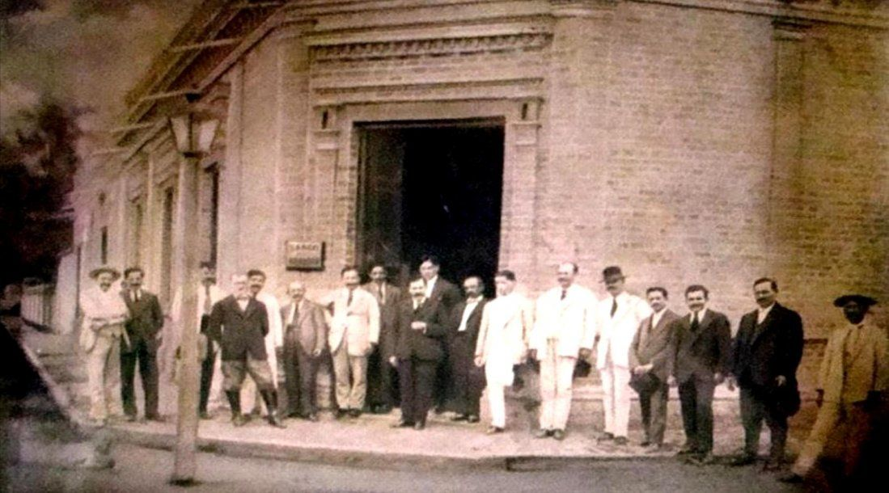
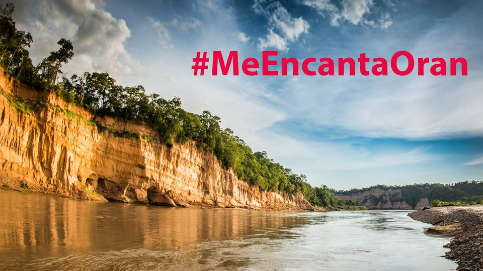

Bienvenidos!
San Ramón de la Nueva Orán, más conocida como Orán, es una ciudad del norte de Argentina, en la provincia de Salta. Es cabecera del departamento Orán, en el norte de la provincia. En el censo de 2010 registró una población de 82 413 habitantes, de los cuales 76 070 habitan la zona urbana.1 Este hace que la convierta en el 2º mayor centro urbano de la provincia y uno de los 40 mayores centros urbanos del país. Fue fundada el 31 de agosto de 1794 por el español Ramón García de León y Pizarro, quien la bautizó como San Ramón de la Nueva Orán por ser esa fecha el día de San Ramón Nonato, y por haber nacido él mismo en la ciudad argelina de Orán. Orán está situada a 230 km de su capital provincial, Salta, en una zona de clima tropical (se halla 33 km al norte del trópico de Capricornio), de grandes ríos, principalmente dedicada a los cultivos comerciales. El centro urbano se encuentra a 32 km al sur de la frontera boliviana, a unos 3 km al oeste del caudaloso río Bermejo, y a escasos 20 km al sur de la confluencia del Río Bermejo con el Río Grande de Tarija, siendo atravesado el ejido de la ciudad por la ruta nacional RN 50
Historia
Los primeros habitantes de la zona fueron los churumatas y mataguayos (emparentados con los wichís), dedicados a la caza, la pesca en los ríos circundantes y el cultivo de algunas especies. En ocasiones se unían en alianzas y en otras se producían violentos conflictos por el control de los recursos. Posteriormente, después de las delimitaciones de Argentina, fue zona de cierta migración quechua. Durante el siglo xvii y gran parte del siglo xviii los españoles hicieron denodados esfuerzos por apoderarse de la zona estableciendo una población, enfrentándose a la tenaz resistencia de los pueblos originarios. Así fue que en 1625, en el lugar llamado El Ramal (o La Enramada o "Junta de los Ríos"), los españoles hicieron un primer intento de asentamiento poblacional estableciendo la efímera villa de Santiago de Guadalcázar. Pero el poblado fue atacado y destruido por pobladores bajantes del altiplano de Jujuy de la nación aimara en 1629. Más de un siglo después, en 1779, fue fundada en la zona una reducción por parte de franciscanos procedentes de San Bernardo de Tarija; los misioneros llamaron a la nueva localidad Nuestra Señora de las Angustias del (río) Zenta e introdujeron el cultivo de la vid, la caña de azúcar, los cítricos y otras especies frutícolas. Adjunto a la reducción las autoridades españolas establecieron el fortín San Andrés. Este primer núcleo persiste con el nombre de Misión Zenta a unos 5 km al oeste del centro comercial de la ciudad. Esta segunda fundación resultó también destruida por los indígenas aproximadamente diez años después. El apoderamiento definitivo ocurrió el 31 de agosto de 1794, cuando el militar y noble español Ramón García de León y Pizarro, mientras era gobernador de la Intendencia de Salta del Tucumán, fundó San Ramón de la Nueva Orán, dedicando el nombre de la ciudad a San Ramón Nonato, cuyo santoral se celebraba ese día, y a la ciudad norteafricana de Orán, en donde García de León y Pizarro había nacido. La nueva población reforzaría así el nexo directo entre la ciudad de Salta y la villa de Tarija. En la Biblioteca del Congreso de los Estados Unidos se conserva un mapa de la región de Orán al momento de fundarse la ciudad, en 1794,2 probablemente confeccionado por García de León y Pizarro o alguien de su entorno.
Atractivos
Aunque San Ramón de la Nueva Orán tiene ya más de 200 años de antigüedad, posee pocos edificios antiguos, por la destrucción sísmica. Un colegio de estilo colonial y la catedral, moderno edificio de sobrias líneas resaltadas por el alto y esbelto campanil, son las construcciones más interesantes. Llama también la atención del visitante el arbolado público de la ciudad, con especies autóctonas muy floridas. Se destacan los lapachos, seguidos de guayabos, tarcos, yuchanes, tipas, entre otros, a los que se suman los naranjos. En un radio de 50 km a la redonda, el turista puede visitar las ruinas de la antigua misión de la ciudad de Orán, y los numerosos arroyos y ríos que le son próximos, donde es posible practicar la pesca deportiva en el río Bermejo y en territorio boliviano. Todos aptos para el turismo de aventura, encontrándose la ciudad en el linde oriental de la reserva de biosfera de las Yungas del programa MaB, región propicia para la práctica de ciclo turismo, mountain bike y moto enduro.